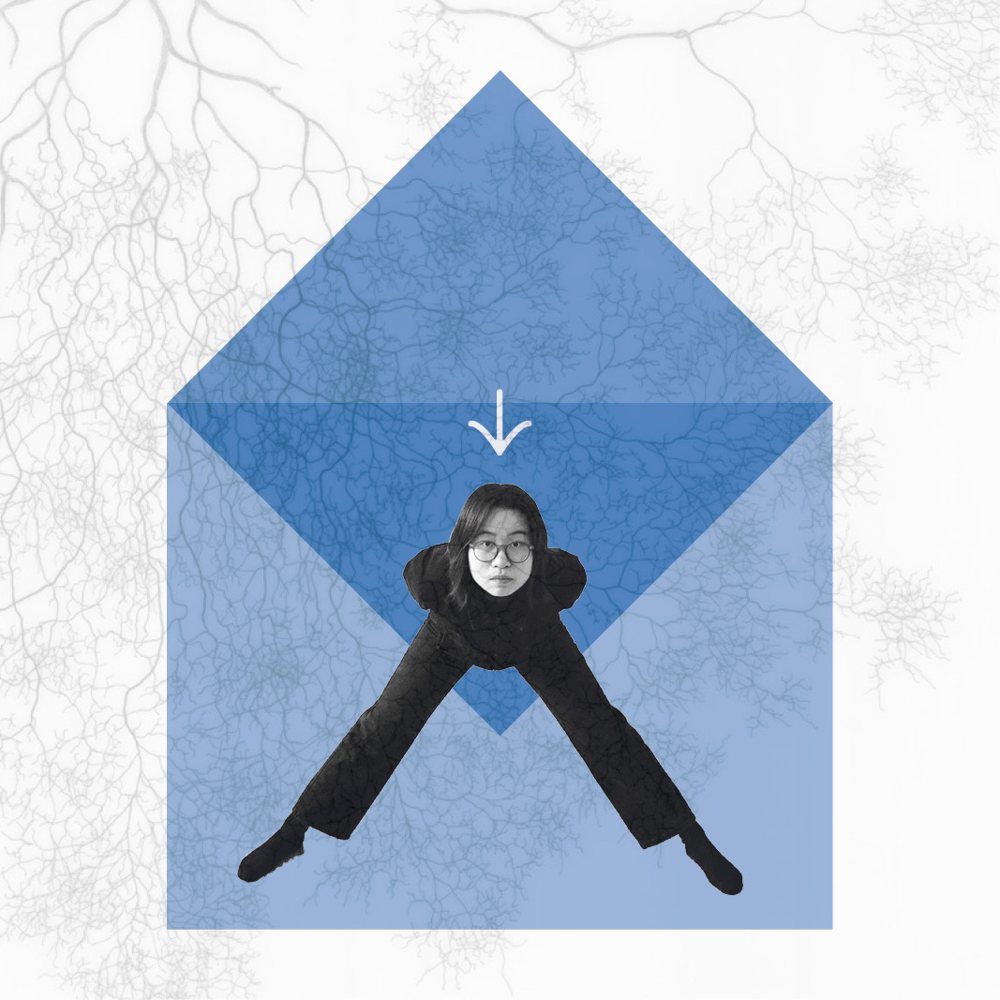

Salutation :)
Étudiante en deuxième année de DNMADE Graphisme Image de Communication, je suis particulièrement sensible à une approche transdisplinaire du design. Curieuse et polyvalente, je m'intéresse à divers domaines qui me nourissent et développent ma créativité : le cirque, la philosophie, l'entomologie (surtout les chenilles) et l'art en général. Je serais ravie de travailler avec vous lors d'un stage de 12 semaines du 5 avril au 27 juin 2027 !
